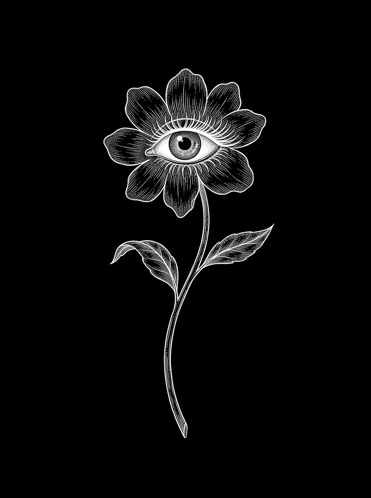
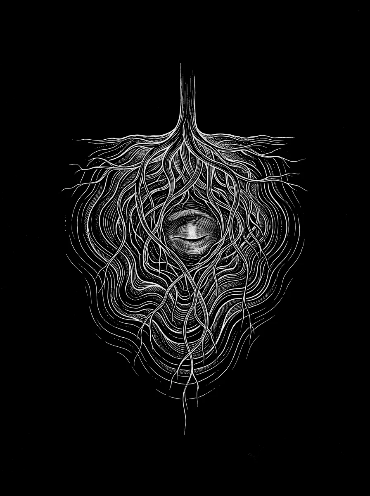
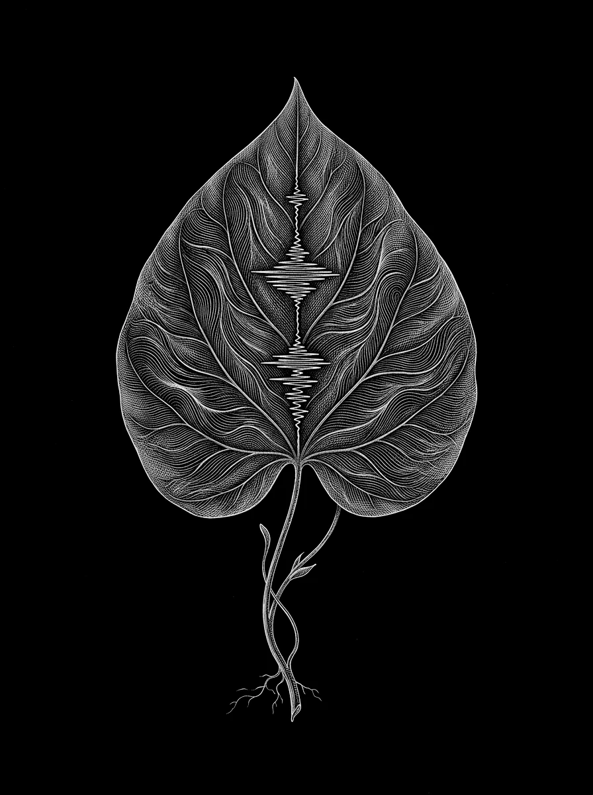
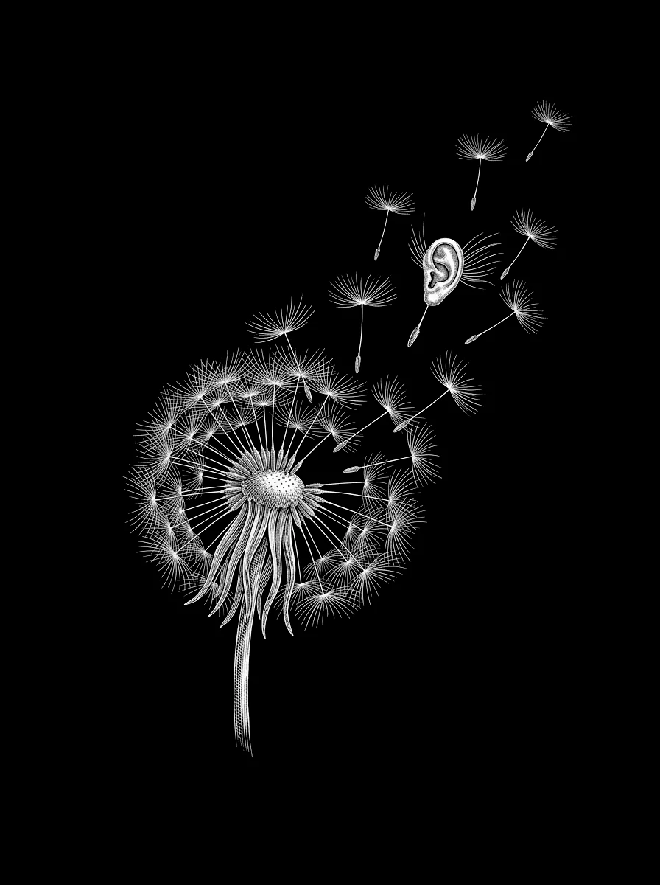

Rhythm, tension and movement
Repetition, groove and drive shape the flow. Intensity builds, recedes or changes as the narrative calls for it.

DJ • ELECTRONIC MUSIC • SONIC RESEARCH
SOUND · FREQUENCY · PRESENCE
01 / SONIC RESEARCH
RHYTHM / TEXTURE / PROGRESSION
Zaphyra explores electronic music as a space for perception and movement. Her research grows from the meeting of rhythm, texture, frequency and atmosphere — elements that can alter how time is felt on the dancefloor.
Beyond sequencing tracks, the intention is to shape an experience that unfolds through the body: a sonic narrative that creates tension, opens space to breathe and turns listening into presence.
Her identity does not depend on a single label. It emerges through curation, sensitivity to context and the way each element connects to what came before and what is still to come.

02 / APPROACH
LISTENING / PROGRESSION / CONTEXT
Zaphyra builds each set as a composition in real time. Selection develops through the relationship between groove, texture, depth and space, shaping a narrative that responds to the dancefloor rather than following a fixed formula.
Hypnotic, minimal, deep, driving and experimental territories remain possibilities within an open-ended research. What connects these choices is not a label, but attention to progression: tension, suspension, expansion and room to breathe.
From gradual development to moments of greater intensity, the approach adapts to the curation, time slot and character of each event — preserving artistic identity without narrowing the experience.

Repetition, groove and drive shape the flow. Intensity builds, recedes or changes as the narrative calls for it.
Layers, organic timbres, low frequencies, atmospheres and pauses shape how sound and body are perceived.
The set responds to curation, time slot, audience and the energy of the moment. No fixed script: intention, listening and adaptation.
A PRACTICE OF LISTENINGAN EXPERIENCE IN MOTION
03 / LISTEN
THE MUSIC COMES FIRST
Enter Zaphyra's sonic flow. Sets and recordings will be gathered here as they are released.

SOMETHING IS TAKING SHAPE
Some things exist as a feeling first.
04 / BOOKING
BRAZIL · INTERNATIONAL
For proposals, curation and bookings, access Zaphyra’s booking system. It provides a structured starting point for sharing event details and opening a professional conversation.
Start a booking inquiry